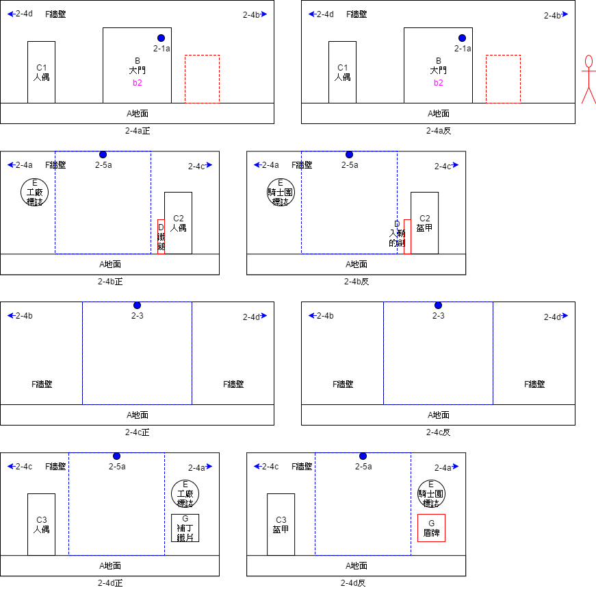
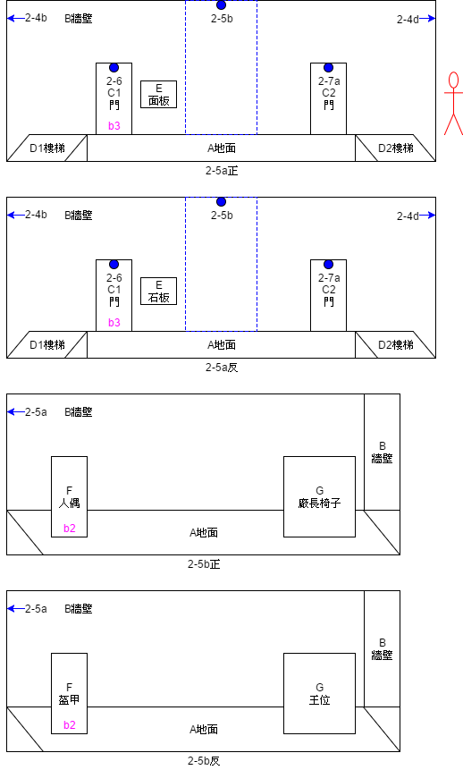
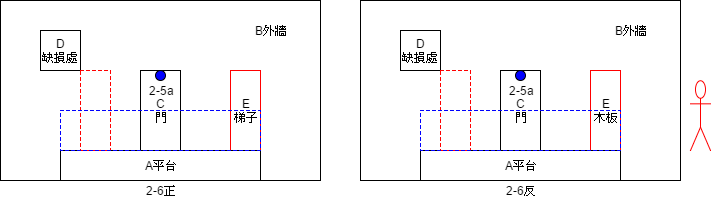
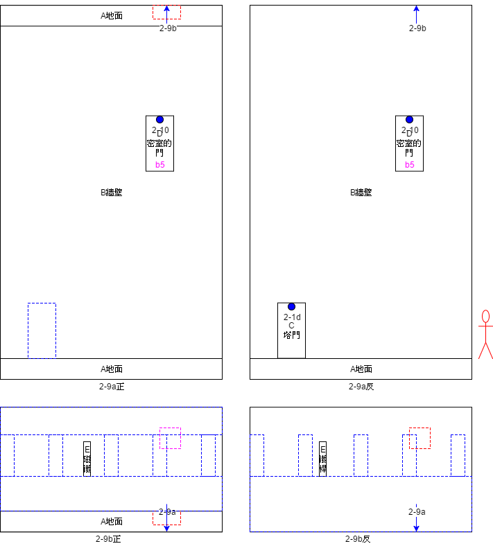
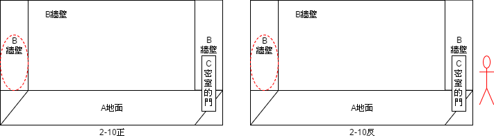

1 Design History
1.1 Flip Tale 1.0
此版本為臺大黑客松時所建置之版本，該版本曾在黑客松展出期間供評審、參賽者等試玩。由於當時尚未有良好的版本號系統，因此僅以1.0命名之。
1.2 Flip Tale v1.0.2_pre
此版本為2016台大社團博覽會時所建置之版本，放置於攤位上並作為給予參與博覽會人員試玩之用。該版本特色為美術尚使用小畫家之可愛風格。
1.3 Flip Tale v1.0.3
此版本為2017台大杜鵑花節時所建置之版本，放置於攤位上並作為予參與杜鵑花節人員試玩之用，亦曾在CH2上展出，也是初始放上社團網站之公開載點之版本。該版本特色為美術進行了大幅度的革新，並修改運鏡方式與不少Bugs。
1.4 Flip Tale TGS
此版本為專門為了2018台北國際電玩展所建置之版本，在展覽中Unizza團隊分別參加了B2B與B2C（Indie House），並得到許多玩家們的回饋。該版本特色為對第一關進行了小幅度的關卡重構、也修改前導劇情的敘述與主選單。
2 Game Overview
2.1 Introduction
本遊戲為2D橫向動作解謎遊戲，目前發布的平台為PC（Windows/Mac）。玩家須操縱主角並利用其「翻轉」能力與世界互動：穿梭於兩個世界之間並利用在不同世界中輪廓相同而內容相異所形成的物件解開謎題前進，從而瞭解整個世界。最後試圖釐清並解開白光、小男孩的真相與整起事件的始末。
2.2 Features
融合翻轉機制的謎題：玩家在遊戲中必須活用「翻轉」－試圖思考相同輪廓而不同內容之物件的關聯性，並與場景、NPC等互動，進而解開謎題。
2.3 Idea
藉由探索主兩個人格之間的轉換，讓玩家瞭解到人看待世界的方式，重新省思自己的內心世界。使人尋找適當方法，更是瞭解到紓解壓力的重要性，學習培養健康心靈，邁向更加健全的人生。
3 Game Mechanics
3.1 Overview
以下將分別解釋遊戲中的某些系統的需求。
3.2 Control & State Machine
方向鍵（上）：跳躍／進入／上爬；方向鍵（左右）：移動；Z鍵：翻轉；X鍵：拾取物品／使用物品／觸發／觸發對話／加速對話／放下物品（長按）；C鍵：開啟筆記本／關閉筆記本。
註一：如果對著「掉在地上的道具（具有白框）」按X，此時若手上持手道具則可以直接互換（因此此時地上道具為原先手上道具、手上道具為原先地上道具）。而如果是對非「掉在地上的道具（具有白框）」按X，即使該道具可以拾取，但並不會進行互換。
註二：如果有門但玩家仍未打開，那麼當玩家站在門前按上時並不會進行會跳躍，而是發出鎖住的音效並顯示對話框（表示鎖住）。
3.3 Flip & Item
在關卡中按下Z鍵即可在兩個世界中穿梭，而此時場景物件會分別執行兩種轉換：翻轉或變色，而哪種場景物件對應到哪種轉換形式則會在企劃書中標出。當玩家在關卡中對「可拾取道具」或是「經由互動可得到道具之物件」按X時，即可將該道具拿到手上。當玩家手上有道具時，長按X約半秒則可將該道具放下，而放下後的道具會稍微縮小以及加上白框來對場景中其他物件做出區別。
3.4 Dialogue
對於對白的觸發方式，可依照觸發的條件而區分為「空間條件」與「其他條件」。前者為設定某個觸發區域，當主角一走進該區域即可滿足該條件；後者則是玩家必須滿足其他的條件。而當玩家滿足上述條件後在按下所指定的按鍵即可觸發對話。一般而言獨白多為僅需空間條件的達成，尚須滿足其他條件之型態多用於對話或使用物品之情況。此外在某些條件下會有較為特殊的對白，關於此種對白多與重要劇情有關，另行標出。
而根據對白觸發次數亦可分為一次性或重複性對白。對白觸發時並不會凍結玩家的操作，因此玩家仍可自由翻轉與移動。另外有些對白觸發時為隨機對白，即每次在「遊戲狀態條件相同」的情況下觸發該對白，並不一定會顯示同一種內容。
基本上對白可區分為對白框與對白文字兩部分，對於對白框在觸發對白時以淡入形式顯現，在同一對白事件下文字切換時並不會跟著淡入淡出，且框之大小亦不變，唯該對白事件結束後對話框尚可跟隨對白文字一同淡出。
 以下為對白文字部分之生命週期中進行不同動作所觸發之行為圖：首先為基本模式，即對白文字部分在行進時不進行任何按鍵或事件觸發，會依序歷經三個時期（淡入期、顯現期、淡出期），可參見下圖。
對白在行進時若按下Z鍵時，此時若無新對白的觸發，則進行按鍵事件的結算（也就是翻轉）。若此時有不同新對白的觸發，則新對白會將舊對白事件覆蓋（時間點a為按下Z鍵時），可參見下圖。
對白在行進時若按下X鍵（時間點a），此時X鍵之功能為「對白快進鍵」，可參見下圖。特別注意到若此時X鍵亦可觸發使用物品事件，則一律先結算對白快進事件，即若X鍵在場合可同時具有「對白快進鍵功能」與「觸發使用物品事件功能」時，一概以前者作為優先判定。最後，對白框在行進時若離開該場景或對白觸發區域時（時間點a）之情況可參見下圖。
以下為對白文字部分之生命週期中進行不同動作所觸發之行為圖：首先為基本模式，即對白文字部分在行進時不進行任何按鍵或事件觸發，會依序歷經三個時期（淡入期、顯現期、淡出期），可參見下圖。
對白在行進時若按下Z鍵時，此時若無新對白的觸發，則進行按鍵事件的結算（也就是翻轉）。若此時有不同新對白的觸發，則新對白會將舊對白事件覆蓋（時間點a為按下Z鍵時），可參見下圖。
對白在行進時若按下X鍵（時間點a），此時X鍵之功能為「對白快進鍵」，可參見下圖。特別注意到若此時X鍵亦可觸發使用物品事件，則一律先結算對白快進事件，即若X鍵在場合可同時具有「對白快進鍵功能」與「觸發使用物品事件功能」時，一概以前者作為優先判定。最後，對白框在行進時若離開該場景或對白觸發區域時（時間點a）之情況可參見下圖。

3.5 Animation
有些物件互動的動畫與劇情需求動畫在播放時，畫面的上下兩邊切入黑邊（像在看電影一樣），此時封鎖玩家的行動（方向鍵、Z、X、C皆鎖住），而在企劃書中將以「電影式動畫」來描述此種動畫事件。
3.5 Idea
當玩家在遊戲中拾取到「父親的筆記本」後，Idea機制即啟用。只要在關卡中按下C鍵即可呼叫出來、再次按下C鍵即可關閉。筆記本開啟時利用方向鍵左、右進行向左、向右翻頁，隨著遊戲的進行（當滿足一定條件主角頭上會出現燈泡，提示玩家可以去看筆記本），主角的想法會逐漸記錄在筆記本中。
3.6 Save & Load
遊戲的存檔機制可分為「大關間存檔」與「大關內存檔」：前者以大關為單位存檔（例如：玩家破完第一關之後，下次開啟可從第二關開始）；後者在關卡內為「完全存檔」，當玩家觸發存檔事件時，遊戲即將遊戲當時的狀態（包含任務進度、事件觸發、物件狀態、場景狀態、主角狀態等「完全保存」）。
關於存檔事件的觸發，當玩家在場景某處看到當初父親送給主角的「渡鴉」時，對著牠按X（無論是否有手持物件接優先觸發存檔事件）即可存檔。遊戲的讀檔機制則透過UI系統實作，選單內會有讀檔選項，當玩家選擇選項則讀取相應的存檔。
4 Game Flow
4.1 Overview
遊戲共分為三大關與一小段教學關卡，當玩家完成第三關後即進入結局，遊戲結束。
4.2 Plot
主角在下班後走在路上，看到了那隻渡鴉覺得無比熟悉，因此立刻追了上去。當他轉入一個轉角的時候看到白光，此時主角從現實中進到我們設定的世界主角生於一個溫馨的家庭，身為獨生子的他有一父一母。而主角的父親是一名空軍（戰鬥機駕駛員），時常要離開家去打仗。父親在休假回家時常常和主角分享飛行的快樂（不會提到關於打仗的事），讓小時候的主角對「飛行」產生憧憬－夢想著當個飛行員（私人飛機駕駛員），有一架屬於自己的飛機，可以自由自在地探索整個世界。
基本上主角的父親的思想較為開放，認為人在世界上應該要盡可能地追求自己所嚮往的事物（但即使父親喜歡飛行，但仍為國家情勢所逼而站上第一線戰場）；母親對於一直去打仗的父親失去安全感（覺得似乎何時都有可能會失去這位丈夫），認為人應該追求正常的生活、有穩定的收入，平凡也是一種幸福。
後來父親因公殉職，母親因而再婚，生下了一個同母異父的妹妹。而繼父跟母親的理念大致相似（平凡的生活），即使如此繼父也是愛著主角的。在沒有飛行相關的家庭下，母親與繼父共同向主角灌輸追求穩定生活的思想，主角逐漸被遣移默化。也由於父親的殉職少了給予夢想的因素，這兩項原因導致主角逐漸忘記夢想。主角的妹妹不認識主角本來的父親，和主角相處融洽，長大後也因為家庭關係投入正常的工作。
父親去打最後一場仗時，有隱約感覺自己會死在戰場上，因此託付託付別人帶給主角一隻渡鴉。主角起始很疼愛這隻渡鴉，後來隨著母親再婚而忘記夢想的同時，有一天這隻渡鴉就飛走了。
學生時代以考試導向的教育體制讓主角在成長過程中漸漸迷失方向，只會學習別人限制的知識。而弱肉強食的社會體制更是讓主角在工作時更難接觸到自己有興趣的事物，常常因為工作機會考量而強迫自己去做不想做的事。後來主角當上了文書處理類型的公務人員，平時受盡欺凌壓榨、工作也備感壓力。小時候的夢想已經不復存在。
當長大後的主角回想到自己曾經的夢想時為感到很後悔，但是自己已經錯過人生的精華階段，不可能再重來。感到一絲帶有遺憾的暖意，（大概就是「原來我曾經有這樣的夢想啊…」的感覺），俗話說「花有重開日，人無再少年。」就是指這種情況吧。 事實上正當主角下班回家時就被一輛突如其來的車撞死了（白光正是該車的大燈），因此遊戲中的世界也正是主角死後的世界，在初始場景的墓碑就是主角自己的墓碑。而小男孩則是主角小時候的模樣，代表著主角在小時候充滿童心、夢想的自我，即為主角之反面人格。而正面人格則是代表著主角在社會化的歷程中受盡壓榨欺凌，進而遺忘自己從小的夢想的自我。
本遊戲有兩主不同的結局，在不同的人格或條件達成下將觸發不同的遊戲結局。第一種結局：如果玩家切換成真實世界壓抑的人格回到原點，玩家將發現：遊戲開始的墓碑竟然就是自己的墓碑，原來主角長期活在生活壓力之下，為了滿足自己身邊的人種種的要求，不斷的把情緒深埋在心底，沒有任何方法宣泄，最終邁向毀滅之路。第二種結局：如果主角以夢境中不受拘束開闊的人格回到原點，主角發現墓碑上寫著自己的名子，忽然想起自己其實已經在一場車禍中意外身亡，主角拿起身旁一束花獻給自己，坦然的面對這一切，獲得救贖。
在渡鴉離開主角後其實是飛到了戰場，把父親的筆記本撿了起來，那本筆記本是父親記錄著與主角相處的時光，第一頁的話是希望在戰爭結束和主角長大後，可以一起飛向天空
4.3 World View
遊戲中的整個世界都是主角的潛意識所投射出來的世界，正面是藉由主角長大後人格所「感受、理解到的世界」；反面則是主角尚小時人格所「感受、理解到的世界」。因此，正面世界的場景與物件自然會比較貼近現實（因為是長大後所看到的），而反面則較不受拘束（小時候有很多的想像）。
無論是哪一個世界，客觀來說都不屬於現實。在兩個世界切換時有以下幾點設定：- 某些物件在正反面輪廓相同，而內容不同；甚至正反兩面可能一面為生物、一面為無生命。
- 玩家可以共有正反兩面的記憶。
- 正反兩面的「同一個NPC」並不知道彼此的存在，知識也不共有。
- 正反兩面切換時所有物件的「宏觀物理量」都會相同（例如正面的石頭以5m/s的速率飛行，切換後的紙團應該也要以5m/s的速率飛行，即便考慮質量會造成兩者動能不同）。
5 Characters
5.1 Overview
在遊戲中登場的主要角色為玩家所操控的角色，藉由使玩家操控主角來達到帶入遊戲的目的。而主角家人亦會在遊戲劇情部分登場，主要作用為敘述主角的背景設定與心路歷程。此外，第二關關卡中加入了不少NPC，可使玩家與其互動進而瞭解整體劇情的脈絡。
5.2 Player
5.3 Non Player Characters
5.3.1 Foreman/Chef (NPC A)
工頭（正面）：形象為頭戴著工地用安全帽的中年大叔，手會輪流拿著各式工具。個性懶散、嗜睡，基本上就是一個不愛工作、只想偷懶的傢伙，時常看到他在打瞌睡。代表主角面對著大量工作時想逃避的心態（知道自己有很多工作要做，但還是選擇用睡眠來逃避）。說話說到一半可能直接睡著，而且話題也會圍繞在同一件工作上（例如一直說水管還沒修好），並不斷地逃避。
廚師（反面）：形象為頭戴著廚師帽，手上有很多甜食，他也會時不時地舔著這些甜食。個性開朗、很負責任（所以看到沒食物會自己去打獵，跟工頭形成對比）、專心（跟工頭形成對比，工頭連一件事都做不好）。代表主角小時候童年愛吃與能夠專注的性格。時常專注在工作上（作菜），也有可能邊工作邊咬著一個食物。
5.3.2 Security/Knight (NPC B)
保全（正面）：形象為穿著保全制服的白髮老人（未來老人）。個性悲觀、被動、不太想服從老闆的命令，雖然職責是看管工廠的安全，但卻只是佔著位置、頹廢度日。是一個對自己的工作沒有熱情的傢伙，也會對工作內容有許多埋怨。代表主角對現有工作的不滿意、抱怨。抱怨對現有工作和上司的不滿意。時常說些悲觀的話（例如表示工廠也做出來的人偶很差）。
騎士（反面）：形象為穿著盔甲的泰迪熊。個性忠誠（和保全的不忠形成對比）、剛毅木訥、果決。代表主角兒時的玩伴，因為沒有其他朋友，只能跟玩具熊作伴，而玩具熊也忠實地守在主角身旁。說話直接，而且也會時常表示自己必須擔保國王的安危。
5.3.3 Researcher/Musician (NPC C)
研究員（正面）：形象為半人半機器人，有很多機器手臂拿著零件或是研究用道具。個性保守、拘謹、遵守秩序，但是對於工廠的人偶很了解而且會告訴主角很多知識（提示）。代表主角在現有體制下只能乖乖遵守，逼自己跟著這套體制去成為一個有秩序的人，但是沒什麼自主性。會說一些專業的事情、就事論事（例如某個對話內只談拓印一件事），不會去提到其他瑣碎的事。
樂師（反面）：形象為有很多手（六隻手臂）拿著不同的樂器（兩隻：小提琴、兩隻：管樂器、兩隻：鼓棒），有一隻猴子寵物（正面是小隻的機器人）負責敲鈸，身體設計成玩具的感覺。個性樂觀、崇尚自由、不受拘束（和研究員成為對比），樂於演奏出屬於自己的音樂。代表主角小時候的玩心，有很多樂器跟手臂表示甚麼都想玩。喜歡他人交談，但是一談到自己有興趣的事物甚至會不顧他人，進入自己的異想世界。可能會講一些其他（非音樂）的事情，可能會提到關於這座城堡的小事情，對於一般人覺得尋常的事也會感到很新奇。
5.3.4 Boss/King (NPC D)
6.4 Stage 2
6.4.1 Overview
本關的正面是一間工廠，其營造出的些許破舊、生鏽、黯淡的感覺與主角的正面人格產生呼應。由於長大後的主角長期處在一套受壓迫的制度下，而工廠的老闆（也就是小男孩的另一面）則代表著在這套制度下，主角投射自己是工廠的老闆，嘗試著成為該制度下的統治者，但終究是一場空，他要求底下的人日以繼夜的工作。而這個工廠生產著人偶：矮小、結構單純、只能做低階勞動的人形無機體，需要以某種燃料或能量驅動，人偶會製造更多的人偶，重複無意義的生產。背後象徵著：工廠主人看似擁有很多，但其實根本沒有意義。
反面則是一座宏大、端莊，磚造的中世紀城堡，也是主角小時候心中所嚮往的歸處、最初的夢想。城堡的「王」是主角的過去－小男孩。他告訴底下的人，今天要辦一場派對、要準備宴客（其實就是歡迎主角）。本大關旨在藉由加入大量的NPC與任務，使玩家可與其對話、互動，以增加遊戲故事性與關卡難度，使玩家思考主角的個性與境遇，並導向及暗示最後的結局。
6.4.2 Flow
統一場景名稱如下：
- 2-1a~2-1f：工廠牆外／城牆外
- 2-2a：生產線／廚房
- 2-2b：輸送帶／餐廳
- 2-3a~2-3b：工廠走廊／城堡走廊
- 2-3c：工廠雜具間／城堡雜具間
- 2-4a~2-4d：工廠大廳／城堡大廳
- 2-5a：工廠左樓梯走廊／城堡左樓梯走廊
- 2-5b：員工宿舍／主臥室
- 2-5c：宿舍陽台／臥室陽台
- 2-6a：工廠右樓梯走廊／城堡右樓梯走廊
- 2-6b：研究室／演奏室
- 2-6c~2-6d：研究室深處／儲藏室
- 2-7a：廠長門前／國王門前
- 2-7b~2-7c：辦公室／王位
- 2-8a：動力室／謎題室
- 2-8b：霓虹之間／記憶之間
- 2-8c：鍋爐室／酒窖
- 2-9a~2-9c：煙囪／塔
- 2-9d：煙囪頂／塔頂
- 2-10：內心深處／鏡子密室
 任務流程如下：
任務流程如下：

6.4.3 Stage 2-1
6.4.3.1 Game Object
| 代號 | 名稱 | 翻轉 | 拾取行為 |
|---|---|---|---|
| A | 草地 | 變色 | - |
| 草地 | - | ||
| B | 大門 | 翻轉 | - |
| 大門 | - | ||
| C1 | 小垃圾堆 | 翻轉 | 隨機取得［紙團、紙團、紙團、紙團］ |
| 小樹叢 | 隨機取得［紅果實、黃果實、綠果實、紫果實］ | ||
| C2 | 垃圾堆 | 翻轉 | 隨機取得［鏟子、電池］ |
| 樹叢 | 隨機取得［連有大葉片的枝條、木樁］ | ||
| D | 電線桿／電線 | 變色／變色 | - |
| 樹／藤蔓 | - | ||
| E | 側門 | 翻轉 | - |
| 側門 | - | ||
| F | 回收桶 | 翻轉 | - |
| 塔門 | - | ||
| G | 貨箱 | 翻轉 | - |
| 側門 | - | ||
| H | 貨架 | 變色 | - |
| 石階 | - | ||
| I | 移動台 | 變色 | - |
| - | - | ||
| J | 面板 | 翻轉 | - |
| 石板 | - | ||
| K | 鐵鍊 | 變色 | - |
| 藤蔓 | - | ||
| L | 外牆 | 變色 | - |
| 外牆 | - | ||
| 註一 | 烏雲 | 翻轉 | - |
| 白雲 | - | ||
| 註二 | 蓬鬆的粉紅雲 | 翻轉 | - |
| 蓬鬆的白雲 | - | ||
| - | 紙團、紙團、紙團、紙團 | 翻轉 | 落下後消失 |
| 紅果實、黃果實、綠果實、紫果實 | 落下後消失 | ||
| - | 鏟子 | 翻轉 | 落下後消失 |
| 連有大葉片的枝條 | 落下後消失 | ||
| - | 電池 | 翻轉 | 落下後消失 |
| 木樁 | 落下後消失 | ||
| - | 鏟有雲的鏟子 | 翻轉 | 落下後消失 |
| 棉花糖 | 落下後消失 | ||
| - | 鐵撬 | 翻轉 | - |
| 拐杖糖 | - |
6.4.3.2 Event
| 前置條件 | 結算結果 | 備註 | COLUMN4 | COLUMN5 | COLUMN6 |
|---|---|---|---|---|---|
| 空間 | 物件 | 其他 | 物件 | 敘述 | |
| 2-1b／樹處／反 | 普通的匕首 | - | 普通的匕首 | 樹皮被劃開，流出樹汁 | - |
| 2-1b／樹處／反 | 顏料刷子 | 樹皮被劃開，流出樹汁 | 沾有樹汁的顏料刷子 | 利用顏料刷子沾上樹汁 | - |
| 2-1c／側門處／正 | 鐵撬 | - | 鐵撬 | 側門被撬開 | - |
| 2-1c／廚師處／反 | 棉花糖 | - | 拐杖糖 | 交付棉花糖，廚師給予拐杖糖 | |
| 2-1d／塔門處／正 | 塔的鑰匙 | - | 塔的鑰匙 | 塔門被打開 | - |
| 2-1e／面板／正 | 通行證 | 貨架與貨箱在左側 | 通行證 | 操作面板燈亮，貨架載著貨箱由左移動到右 | - |
| 2-1e／面板／正 | 通行證 | 貨架與貨箱在右側 | 通行證 | 操作面板燈亮，貨架載著貨箱由右移動到左 | - |
| 2-1x／蓬鬆的粉紅雲前／正 | 鏟子 | - | 鏟有雲的鏟子 | 利用鏟子將雲鏟起 | - |
6.4.4 Stage 2-2
6.4.4.1 Game Object

| 代號 | 名稱 | 翻轉 | 拾取 |
|---|---|---|---|
| A | 地面 | 變色 | - |
| 地面 | - | ||
| B | 牆壁 | 變色 | - |
| 牆壁 | - | ||
| C | 工作臺 | 變色 | - |
| 廚房 | - | ||
| D | 側門 | 變色 | - |
| 側門 | - | ||
| E | 拱門 | 變色 | - |
| 拱門 | - | ||
| F | 門 | 翻轉 | - |
| 門 | - | ||
| G | 人偶 | 翻轉 | - |
| 椅子 | - | ||
| H | 輸送帶 | 變色 | - |
| 桌子 | - | ||
| I | 鍋子 | 翻轉 | - |
| 鍋子 | - |
6.4.4.2 Event
| 前置條件 | 結算結果 | 備註 | COLUMN4 | COLUMN5 | COLUMN6 |
|---|---|---|---|---|---|
| 空間 | 物件 | 其他 | 物件 | 敘述 | |
| - | - | - | - | - | - |
6.4.5 Stage 2-3
6.5.3.1 Game Object

| 代號 | 名稱 | 翻轉 | 拾取 |
|---|---|---|---|
| A | 地面 | 變色 | - |
| 地面 | - | ||
| B | 牆壁 | 變色 | - |
| 牆壁 | - | ||
| C | 門 | 翻轉 | - |
| 門 | - | ||
| D | 門 | 翻轉 | - |
| 門 | - | ||
| E1 | 設計圖 | 翻轉 | - |
| 畫 | - | ||
| E2 | 設計圖 | 翻轉 | - |
| 畫 | - | ||
| E3 | 設計圖 | 翻轉 | - |
| 畫 | - | ||
| E4 | 設計圖 | 翻轉 | - |
| 畫 | - | ||
| F | 牆壁 | 變色 | - |
| 牆壁 | - | ||
| G | 面板 | 翻轉 | - |
| 石板 | - | ||
| H | 按鈕 | 翻轉 | - |
| 木板 | - | ||
| I | 空瓶箱 | 翻轉 | 取得［空瓶］ |
| 空瓶箱 | 取得［空瓶］ | ||
| J | 刷子 | 翻轉 | - |
| 刷子 | - | ||
| K | 顏料罐 | 翻轉 | - |
| 顏料罐 | - |
6.5.3.2 Event
| 前置條件 | 結算結果 | 備註 | COLUMN4 | COLUMN5 | COLUMN6 |
|---|---|---|---|---|---|
| 空間 | 物件 | 其他 | 物件 | 敘述 | |
| 2-3a／按鈕處／正 | - | - | - | 設計圖E1和E2內容對調 | - |
| 2-3b／右側按鈕處／正 | - | - | - | 設計圖E2和E3內容對調 | - |
| 2-3b／左側按鈕處／正 | - | - | - | 設計圖E3和E4內容對調 | - |
6.4.6 Stage 2-4
6.4.6.1 Game Object
| 代號 | 名稱 | 翻轉 | 拾取 |
|---|---|---|---|
| A | 地面 | 變色 | - |
| 地面 | - | ||
| B | 大門 | 翻轉 | - |
| 大門 | - | ||
| C1 | 人偶 | 翻轉 | - |
| 盔甲 | - | ||
| C2 | 人偶 | 翻轉 | - |
| 盔甲 | - | ||
| C3 | 人偶 | 翻轉 | - |
| 盔甲 | - | ||
| D | 樓梯 | 變色 | - |
| 樓梯 | - | ||
| E | 標誌 | 翻轉 | - |
| 標誌 | - | ||
| F | 屏幕 | 翻轉 | - |
| 畫 | - | ||
| G | 補丁鐵片 | 翻轉 | - |
| 盾牌 | 取走［盾牌］ | ||
| H | 鐵鎚 | 翻轉 | 取走［鐵鎚］ |
| 入鞘的劍 | 取走［入鞘的劍］ |
6.4.6.2 Event
| 前置條件 | 結算結果 | 備註 | COLUMN4 | COLUMN5 | COLUMN6 |
|---|---|---|---|---|---|
| 空間 | 物件 | 其他 | 物件 | 敘述 | |
| 2-4b／標誌處／反 | 沾有顏料的刷子 | - | 刷子 | 將顏料塗上標誌 | - |
| 2-4d／標誌處／反 | 沾有顏料的刷子 | - | 刷子 | 將顏料塗上標誌 | - |
| 2-4b／標誌處／反 | 補丁鐵片 | 標誌上塗有顏料 | 帶有標誌的補丁鐵片 | 將標誌拓上補丁鐵片 | - |
| 2-4d／標誌處／反 | 補丁鐵片 | 標誌上塗有顏料 | 帶有標誌的補丁鐵片 | 將標誌拓上補丁鐵片 | - |
6.4.7 Stage 2-5
6.4.7.1 Game Object
| 代號 | 名稱 | 翻轉 | 拾取 |
|---|---|---|---|
| A | 地面 | 變色 | - |
| 地面 | - | ||
| B | 牆壁 | 變色 | - |
| 牆壁 | - | ||
| C | 樓梯 | 變色 | - |
| 樓梯 | - | ||
| D | 圓鋸片 | 翻轉 | 取走［圓鋸片］ |
| 鈸 | 取走［鈸］ | ||
| E | 面板 | 翻轉 | - |
| 石板 | - | ||
| F | 門 | 翻轉 | - |
| 門 | - | ||
| E | 標誌 | 翻轉 | - |
| 標誌 | - | ||
| F | 屏幕 | 翻轉 | - |
| 畫 | - | ||
| G | 牆壁 | 變色 | - |
| 牆壁 | - | ||
| H | 床 | 翻轉 | - |
| 床 | - | ||
| I | 外牆 | 變色 | - |
| 外牆 | - | ||
| J | 燈泡 | 翻轉 | - |
| 蘑菇 | 取走［蘑菇］ | ||
| K | 缺損處 | 變色 | - |
| 缺損處 | - |
6.4.7.2 Event
| 前置條件 | 結算結果 | 備註 | COLUMN4 | COLUMN5 | COLUMN6 |
|---|---|---|---|---|---|
| 空間 | 物件 | 其他 | 物件 | 敘述 | |
| 2-5c／城牆破損處前／反 | 梯子 | - | 無 | 將梯子搭在臨時搭建的施工平台 | - |
| 2-5c／城牆破損處／正 | 帶有標誌的補丁鐵片 | 補丁鐵片未釘上 | 無 | 將帶有標誌的補丁鐵片釘上（仍有一角翹起） | |
| 2-5c／城牆破損處／正 | 鐵鎚 | 補丁鐵片已經釘上（仍有一角翹起） | 無 | 將帶有標誌的補丁鐵片釘牢 |
6.4.8 Stage 2-6
6.4.8.1 Game Object
| 代號 | 名稱 | 翻轉 | 拾取 |
|---|---|---|---|
| A | 地面 | 變色 | - |
| 地面 | - | ||
| B | 牆壁 | 變色 | - |
| 牆壁 | - | ||
| C | 樓梯 | 變色 | - |
| 樓梯 | - | ||
| D | 門 | 翻轉 | - |
| 門 | - | ||
| E | 牆壁 | 變色 | - |
| 牆壁 | - | ||
| F | 設計圖打印機 | 翻轉 | - |
| 管風琴 | - | ||
| G1 | 書櫃 | 翻轉 | - |
| 書櫃 | - | ||
| G2 | 書櫃 | 翻轉 | - |
| 書櫃 | - | ||
| G3 | 書櫃 | 翻轉 | - |
| 書櫃 | - | ||
| H | 鐵櫃 | 翻轉 | - |
| 木櫃 | - | ||
| I | 小桌子 | 翻轉 | - |
| 小桌子 | - | ||
| J | 大型人偶 | 翻轉 | - |
| 石雕 | - | ||
| K | 梯子 | 翻轉 | 取走［梯子］ |
| 木板 | 取走［木板］ |
6.4.8.2 Event
| 前置條件 | 結算結果 | 備註 | COLUMN4 | COLUMN5 | COLUMN6 |
|---|---|---|---|---|---|
| 空間 | 物件 | 其他 | 物件 | 敘述 | |
| 2-6b／設計圖印刷機處／正 | 空白的設計藍圖 | - | - | 將空白的設計藍圖放上印刷機 | |
| 2-6b／設計圖印刷機處／正 | 電池 | 設計圖印刷機內無電池，尚未啟動 | - | 將電池放到設計圖印刷機內，啟動設計圖印刷機 | - |
| 2-6b／設計圖印刷機控制桿／正 | - | 設計圖印刷機已啟動 | - | 切換打印的符號 | |
| 2-6b／設計圖印刷機打印鈕／正 | - | 設計圖印刷機已啟動 | - | 將符號打印到設計圖上 | |
| 2-6d／天花板角落處／反 | 蘑菇 | 梯子架在牆角 | - | 將蘑菇插到牆上的洞裏面 | |
| 2-6d／大型人偶旁書桌處／正 | 空白的設計藍圖 | 燈泡已裝上 | 設計藍圖 | 用筆在設計藍圖上記錄下符號 | |
6.4.9 Stage 2-7
6.4.9.1 Game Object
| 代號 | 名稱 | 翻轉 | 拾取 |
|---|---|---|---|
| A | 地面 | 變色 | - |
| 地面 | - | ||
| B | 牆壁 | 變色 | - |
| 牆壁 | - | ||
| C | 設計圖 | 翻轉 | |
| - | |||
| 詩詞掛軸 | - | ||
| D | 人偶 | 翻轉 | |
| - | |||
| 盔甲 | - | ||
| E | 廠長椅子 | 變色 | |
| - | |||
| 王位 | - | ||
| F | 標誌 | 翻轉 | |
| - | |||
| 標誌 | - |
6.4.9.2 Event
6.4.10 Stage 2-8
6.4.10.1 Game Object

| 代號 | 名稱 | 翻轉 | 拾取 |
|---|---|---|---|
| A | 地面 | 變色 | - |
| 地面 | - | ||
| B | 牆壁 | 變色 | - |
| 牆壁 | - | ||
| C | 樓梯 | 變色 | - |
| 樓梯 | - | ||
| D1 | 謎題 | - | - |
| 謎題 | - | ||
| D2 | 謎題 | - | - |
| 謎題 | - | ||
| E | 鐵櫃 | 翻轉 | - |
| 回憶之櫃 | - | ||
| F1 | 鍋爐 | 翻轉 | - |
| 酒桶 | - | ||
| F2 | 鍋爐 | 翻轉 | - |
| 酒桶 | - | ||
| F3 | 鍋爐 | 翻轉 | - |
| 酒桶 | - | ||
| G | 煙囪 | 翻轉 | - |
| 木頭 | - |
6.4.10.2 Event
6.4.11 Stage 2-9
6.4.11.1 Game Object
| 代號 | 名稱 | 翻轉 | 拾取 |
|---|---|---|---|
| A | 地面 | 變色 | - |
| 地面 | - | ||
| B | 牆壁 | 變色 | - |
| 牆壁 | - | ||
| C | 塔門 | 變色 | - |
| - | - | ||
| D | 密室的門 | 翻轉 | - |
| 密室的門 | - | ||
| E | 磁鐵 | - | - |
| 鐵桿 | - |
6.4.11.2 Event
6.4.12 Stage 2-10
6.4.12.1 Game Object
| 代號 | 名稱 | 翻轉 | 拾取 |
|---|---|---|---|
| A | 地面 | 變色 | - |
| 地面 | - | ||
| B | 牆壁 | 變色 | - |
| 牆壁 | - | ||
| C | 密室的門 | 變色 | - |
| 密室的門 | - |
6.4.12.2 Event
7 User Interface
8 Camera
8.1 Overview
基本上由於本遊戲為2D，因此攝影機不須做不同視角或是三軸的切換，僅需於同一平面上移動即可，唯運鏡模式可行調整如下兩種：第一種：場景間鏡頭不連貫，在切換場景時會有漸暗及漸亮的快速轉換動畫。前者適用於連續的場景間（例：草原場景間的移動（室外到室外）），後者則適用於不連續的場景間（例：由草原場景進入到屋內（室外到室內））。第二種：場景間鏡頭連貫，鏡頭一鏡追隨主角到底，不可有切換。基本上若無特別說明則場景間的鏡頭切換均採用第一種形式。